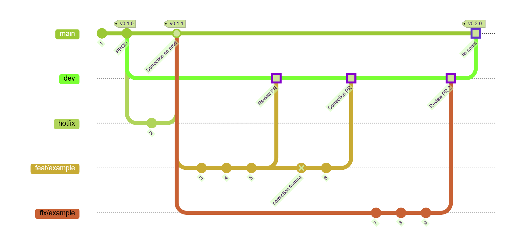

Introduction
Installation
Pre-commit // Commitizen
Ce sont deux outils permettant pour l'un de créer des git hooks que ce soit au moment du push ou au moment d'écrire un message de commit.
Pour l'instant, nous avons fait le choix d'utiliser qu'un git hook pour les messages de commit.
Installation: Pre-Commit
Etant donné que c'est un package Python, je conseille de passer par l'outil pipx, qui fonctionne comme les outils de versionning pour Node (volta, nvs, etc), ca facilitera les installations pour la suite.
- pipx install pre-commit dans un terminal.
- pre-commit install dans le dossier de votre projet (ici on se positionne dans
pecunia-api/afin que cela installe les git hooks correspondants étant donné que nous ne commitions pas le dossier.git
C'est tout pour Pre-Commit, le fichier de configuration .pre-commit-config.yaml est normalement déjà présent.
Installation: Commitizen
Normalement vous avez pipx sur votre poste de travail.
1.pipx ensurepath
2. pipx install commitizen
3. pipx upgrade commitizen
Si vous avez un retour en faisant cz -h c'est que vous avez bien installé Commitizen. Bravo !
Comment combiner les deux ?
Quand vous effectué un changement dans les fichers et que vous voulez commit votre travail :
Vous n'avez qu'à ajouter comme d'habitude
git add . ou git add <des fichiers>
puis afin de respecter la nomenclature vous faites
cz : cela va vous ouvrir une boite de dialogue dans votre terminal, vous avez juste à choisir ce que vous voulez faire comme dans cette petite vidéo:

et si vous voulez tout de meme passer par un git commit classique. Il faudra respecter la nomenclature parfaitement sinon...

Conclusion
Avec ses deux outils, le project sera cohérent au niveau de ses commits et de ses attentions derrière.
De plus Commitizen permet de gérer la version de nos applications avec cz bump en utilisant semantic versionning et permettant aussi de créer des changelogs
source: https://pre-commit.com/#install
source: https://commitizen-tools.github.io/commitizen/
source: https://semver.org/
Checkstyle
Checkstyle est un linter mais aussi un outil de développement qui permet d'avoir des standards de code en Java avec comme deux configurations par défaut:
Sun Code Conventionsqui n'a plus été mis à jour depuis 1999Google Java Styledernière mis à jour en 2022 et qui est assez strict et ajout des standards d'indentation
C'est ce dernier que j'ai choisis pour notre projet.
Installation Projet
Checkstyle est présent dans notre projet grace à un plugin mis dans le
pom.xml
<plugin>
<groupId>org.apache.maven.plugins</groupId>
<artifactId>maven-checkstyle-plugin</artifactId>
<version>3.6.0</version>
<configuration>
<configLocation>google_checks.xml</configLocation>
</configuration>
</plugin>
Avec ce plugin maven, on pourra utiliser les commandes suivantes :
- mvn checkstyle:check
Cette comande anaylyse et va compter les violations directement dans la console. Cela peut faire échouer la compilation (ce qu'on veut ici) - mvn checkstyle:checkstyle
- la meme chose qu'au dessus sauf qu'ici ca va générer un reporting en forme de page html avec toutes les violations du projet. On doit lancer à la main la page HTML qui se trouve dans target/site/checkstyle.html
Pour avoir ce dossier site/ , il faut éxécuter la commande dans le terminal :
mvn site
Extensions IDE
INTELIJ IDEA
(A modifier car je ne l'utilise pas)
Vous pouvez utiliser ce tutorial :
https://checkstyle.org/idea.html
VS CODE
- Installer l'extension
Checkstyle For Java Ctrl+alt+P=> Checkstyle: Set the Checkstyle Configuration Style- Choisir
/google_checks.xml - Normalement c'est bon, vous êtes en accord avec le projet
source : https://github.com/redhat-developer/vscode-java/wiki/Formatter-settings source: https://checkstyle.org/
Javadoc
Comme en Javascript avec la JSDoc, il extiste en Java, le Javadoc qui permet de documenter notre codebase et générer une page HTML avec toutes nos classes et méthodes.
En lien avec le checkstyle de Google, on devra document nos méthodes et classes afin de rendre claire notre code et qu'il puisse être compréhensible par d'autres développeur.euses.
Installation
Un plugin est disponible avec maven :
<plugin>
<groupId>org.apache.maven.plugins</groupId>
<artifactId>maven-javadoc-plugin</artifactId>
<version>3.6.2</version>
<configuration>
<source>1.8</source>
<target>1.8</target>
</configuration>
</plugin>
Avec ce plugin on a notre disposition 16 commandes mais on va en utliser que quelques une normalement.
mvn javadoc:javadocva générer la documentation dans le dossier target/site encoremvn javadoc:fixva formatter correctement les commentaires javadoc de notre projet (Attention ca affecte l'ENSEMBLE du projet)
A modifier dans le futur afin de lancer pendant la CI et éviter des duplications d'éxécution pour la phase de generate-ressources
source : https://maven.apache.org/plugins/maven-javadoc-plugin/
🔄 Workflow
1. Main Branch
main: Production-ready codedev: Integration branch for new features
2. Feature workflow
- Create a branch :
git checkout -b feat/your-featurefrom amainbranch - Push and open a pull request to dev
- Merge Rebase, if you can, only after 2 approval review
Branching strategy schema

Commit Messages Conventions
Why use a structured commit format ?
A clear and consistent commit message format improves readability, history tracking and automation (e.g., changelogs, release notes, etc)
Conventionnal commit format
<type>(<scope>): <message>
🔷 Types of commits
| Type | Usages |
|---|---|
| feat | A new feature. Correlates with MINOR in SemVer |
| fix | A bug fix. Correlates with PATCH in SemVer |
| docs | Documentation only changes |
| test | Adding missing or correcting existing tests |
| build | Changes that affect the build system or external dependencies (example scope: pip, docker, npm) |
| refactor | A code change that neither fixes a bug nor adds a feature |
| style | Changes that do not affect the meaning of th code (white-space, formatting, missing semi-colons etc.) |
| perf | A code change that improves performance |
| ci | CI/CD related updates |
📌 Examples
feat(auth): add JWT authentication middlewares
fix(ui): resolve navbar rendering issue
build(angular): update angular17 to angular19
docs(readme): update installation guide
Git Branch Strategy
📌 Naming Conventions
| Prefix | Usage |
|---|---|
| feat/ | New feature development |
| fix/ | Bug fixes |
| hotfix/ | Critical productions fixes |
| docs/ | Documentation updates |
| test/ | Testing-relating work |
| refactor/ | Code refactoring |
| chore/ | Maintenance and tooling |
| poc/ | Proof of concept for feasibility testing |
🔷 Examples
feat/<num-ticket-taiga>user-authentication
fix/<num-ticket-taiga>navbar-alignment
docs/<num-ticket-taiga>project-guidelines
chore/<num-ticket-taiga>update-dependencies
Informations et Aides
Aide pour le titre et infos complémentaires :
Ce sont des ressources pour la Méthode Merise et des informations sur la conception de BDD en général :
- Introduction à la methode Merise
- Modélisation Conceptuel des Données
- Modèle de Logique de Données
- Dictionnaire des données
- Aide - Workflow git
- Conclusionide pour le titre et infos complémentaires :
Ce sont des ressources pour la Méthode Merise et des informations sur la conception de BDD en général :
- Introduction à la methode Merise
- Modélisation Conceptuel des Données
- Modèle de Logique de Données
- Dictionnaire des données
- Aide - Workflow git
- Conclusion
Conception de BDD + UML :
MLD + MODÈLE PHYSIQUE DE DONNÉES + Diagramme de classe + Diagramme séquence :
Diagramme de cas d'usage :
Dictionnaire de données :
Google sheets : https://docs.google.com/spreadsheets/d/1p_G5ZhDzxSyXcsKZC1ZgbwwwVrPcOlQ_fioW7h5U2kQ/edit?gid=0#gid=0
MODÈLE CONCEPTUEL DE DONNÉES :
Début de MCD : lien
{kind=link}

// MOOCODO MCD
UTILISATEUR: email_utilisateur, mot de passe, nom, prénom, photo de profil
APPARTENIR, 01 UTILISATEUR, 11 PORTEFEUILLE
PORTEFEUILLE: nom_portefeuille, devise, solde initia
COMPOSER, 0N PORTEFEUILLE, 11 TRANSACTION
FOURNISSEUR: nom
CREER, 1N UTILISATEUR, 1N CATEGORIE
CATEGORIE:nom_categorie, icone, couleur, type, est_global
REUTILISER, 1N PORTEFEUILLE, 0N CATEGORIE
TRANSACTION: montant, type, note, date de la transaction
ASSOCIER, 1N FOURNISSEUR, 01 TRANSACTION
:
RATTACHER, 11 CATEGORIE, 0N ICONE
COMPORTER, 0N CATEGORIE, 11 TRANSACTION
CONTENIR, 0N ETIQUETTE, 01 TRANSACTION
:
:
ICONE:nom_icone, url
:
ETIQUETTE: nom_etiquette
:

:
:
COMPOSER, 0N PORTEFEUILLE, 11 TRANSACTION
:
:
PORTEFEUILLE: nom_portefeuille, devise, solde initial
:
:
ASSOCIER, 0N FOURNISSEUR, 01 TRANSACTION
TRANSACTION: montant, type, note, date de la transaction
CONTENIR, 0N TAG, 0N TRANSACTION
APPARTENIR, 01 UTILISATEUR, 11 PORTEFEUILLE
UTILISATEUR: email_utilisateur, mot de passe, nom, prénom, photo de profil
CREER, 11 FOURNISSEUR, 0N UTILISATEUR
FOURNISSEUR: nom
:
TAG: nom_tag
:
MODIFIER, 0N UTILISATEUR, 11 CATEGORIE
CATEGORIE:nom_categorie, icone, couleur, type, est_global
COMPORTER, 0N CATEGORIE, 11 TRANSACTION
:
:
:
:
RATTACHER, 11 CATEGORIE, 0N ICONE
ICONE:nom_icone, url
:
:

:
:
CREATE, 11 PROVIDER, 0N USER
PROVIDER: name
ASSOCIATE, 0N PROVIDER, 01 TRANSACTION
TAG: tag_name
USER_ROLE: name
ATTACH, 11 USER, 01 USER_ROLE
USER: email, password, last_name, first_name, profile_picture
BELONG_TO, 01 USER, 11 WALLET
:
CONTAIN, 0N TAG, 0N TRANSACTION
:
:
MODIFY, 0N USER, 11 CATEGORY
WALLET: name, currency, initial_balance
COMPOSE, 0N WALLET, 11 TRANSACTION
TRANSACTION: amount, type, note, transaction_date
ICON: icon_name, url
LINK, 11 CATEGORY, 0N ICON
CATEGORY: name, icon, color, type, is_global
INCLUDE, 0N CATEGORY, 11 TRANSACTION
:
:

:
:
CREATE, 11 PROVIDER, 0N USER
PROVIDER: name
ASSOCIATE, 0N PROVIDER, 01 TRANSACTION
TAG: tag_name
USER_ROLE: name
ATTACH, 11 USER, 01 USER_ROLE
USER: email, password, last_name, first_name,
BELONG_TO, 01 USER, 11 WALLET
:
CONTAIN, 0N TAG, 0N TRANSACTION
PROFILE_PICTURE: file,
LOAD, 11 USER, 11 PROFILE_PICTURE
:
:
MODIFY, 0N USER, 11 CATEGORY
WALLET: name, currency, initial_balance
COMPOSE, 0N WALLET, 11 TRANSACTION
TRANSACTION: amount, type, note, transaction_date
ICON: icon_name, url
LINK, 11 CATEGORY, 0N ICON
CATEGORY: name, icon, color, type, is_global
INCLUDE, 0N CATEGORY, 11 TRANSACTION
:
:
MODÈLE LOGIQUE DE DONNÉES :
CATEGORIE ( nom_categorie, icone, couleur, type, est_global, #nom_icone )
CREER ( #email_utilisateur, #nom_categorie )
ICONE ( nom_icone, url )
PORTEFEUILLE ( nom_portefeuille, devise, solde_initia, #email_utilisateur )
REUTILISER ( #nom_portefeuille, #nom_categorie )
TRANSACTION ( montant, type, note, date_de_la_transaction, #nom_portefeuille, nom, #nom_categorie, nom_etiquette )
UTILISATEUR ( email_utilisateur, mot_de_passe, nom, prénom, photo_de_profil )
Introduction
Ce wiki centralise toutes les conventions, tokens, outils SCSS ainsi que les composants UI de l'application
Ici, on peut trouver:
- Toutes les couleurs, espacements et typos officielles (code + exemples)
- Les mixins et outils SCSS réutilisables
- la documentation des composants UI ainsi que leurs propriétés et les bonnes pratiques d'accessibilité
Objectif
Mettre en place une base SCSS pour avoir des styles cohérents et faciles à maintenir dans Angular 19. On utilise des "Design Tokens" (variables globales) pour que tout soit centralisé.
📁 Arborescence SCSS
src/
└── styles/
├── styles.scss # Entrée globale Angular
├── abstracts/
│ └── _breakpoints.scss # Mixin mq()
│ └── _layout.scss # Mixin padding, margin, radius, flexbox
│ └── _shadows.scss # Mixin sur les box-shadows
│ └── _typography.scss # Mixin pour appliquer les fonts
├── base/
│ └── _reset.scss # Reset CSS de base
├── fonts/
│ └── _font-face.scss # déclaration des fonts
├── tokens/
│ ├── _variables-light.scss # Thème clair
│ ├── _variables-dark.scss # Thème sombre
│ ├── _variables-desktop.scss # Tailles desktop
│ └── _variables-mobile.scss # Tailles mobile
└── themes/
├── _tokens.scss # Fonctions `themed()` / `themed-block()`
└── _tokens.map.scss # Généré automatiquement (voir doc design-tokens)
Gestion des Etats avec Angular
Les Signals
Quand utiliser les Signals en Angular
1. Idéal pour les composants UI simples et réactifs
Exemples :
- Boutons
- Icônes
- inputs
- Dropdowns
Pourquoi ?
- Mise à jour immédiate sans re-render global
- Pas de gestion d’abonnement / désabonnement
- Code plus simple et lisible
- Très performant pour l’état local et synchrone
2. 🌐 Observables (RxJS) pour les flux asynchrones
Exemples :
- Requêtes HTTP
- WebSocket / EventSource
- Flux d’événements utilisateur complexes
Pourquoi ?
- Puissance de composition (
mergeMap,combineLatest, etc.) - Gestion d’événements multiples ou dépendants
- Contrôle du temps (
debounce,delay, etc.)
🔁 Ces observables peuvent être convertis en signals dans les composants avec
toSignal().
3. Classes pour les composants complexes avec logique métier
Exemples :
- Formulaires avancés avec validations dynamiques
- Menus interactifs et contextuels
- Wizards, éditeurs, dashboards
Pourquoi ?
- Encapsulation claire avec décorateurs (
@Input,@Output, DI…) - Bonne séparation des responsabilités
- Combinable avec des signals pour une logique plus réactive
Combinaison des trois
Un code moderne Angular typique combine :
- RxJS dans les services (pour les flux de données externes)
- Signals dans les composants (pour l’état local réactif)
- Classes Angular (comme conteneur logique et structure de composant)
Résumé rapide
| Tâche | Outil recommandé |
|---|---|
| UI léger et très réactif | ✅ signal() |
| Données asynchrones (HTTP, etc.) | ✅ Observable (RxJS) |
| Formulaire / menu / logique métier | ✅ class (avec Signals) |
| Coordination entre composants | ✅ Observable, @Input |
Paradigme de Gestion: Signals vs Classes
1. Gestion d’état classique dans Angular (avant Signals)
En Angular traditionnel (pré-Signals), les composants sont des classes avec :
- Des attributs d’état (class fields).
- Du templating via interpolation et bindings (
{{ value }},[prop]="value",(event)...). - Et parfois des observables RxJS pour les flux de données.
Exemple :
@Component({ ... })
export class MyComponent {
count = 0;
increment() {
this.count++;
}
}
Problème :
- Le mécanisme de détection des changements d'Angular (basée sur Zone.js) doit scruter les changements potentiels partout dans le template et la hiérarchie.
- Pour détecter un changement de
count, Angular déclenche une boucle de vérification (digestion), typiquement à chaqueclick,HTTP, ousetTimeout.
👉 C’est une approche pull-based : Angular vérifie l’état pour savoir s’il a changé.
2. Les Signaux Angular (Angular v16+)
Les Signaux (signal()) sont une abstraction réactive qui permet de déclarer l’état comme une source de données auto-réactive.
Définition abstraction réactive:
En informatique, une abstraction réactive désigne un modèle ou une couche logicielle qui permet de gérer et de réagir automatiquement aux changements de données ou d’état, sans avoir à écrire explicitement le code de synchronisation ou de propagation de ces changements.
Dans le cadre des signaux avec Angular :
Un signal est une primitive réactive introduite dans Angular pour gérer l’état de façon déclarative et réactive. Une abstraction réactive avec les signaux signifie que l'on peut manipuler des valeurs (états, données) via des objets ou fonctions qui "savent" notifier automatiquement les parties de l’application qui en dépendent dès qu’il y a un changement. Cela évite d’avoir à gérer manuellement les subscriptions, le changement de détection, ou les flux d’événements : on déclare des dépendances, et Angular s’occupe de réagir aux changements.
Exemple équivalent :
import { signal } from '@angular/core';
@Component({ ... })
export class MyComponent {
count = signal(0);
increment() {
this.count.update(c => c + 1);
}
}
En template :
<p>Count: {{ count() }}</p>
Remarque : count() lit la valeur du signal. Toute dépendance à count() est automatiquement suivie.
✅ Ce qui change :
- Aucune vérification globale nécessaire.
- Seul le DOM ou le composant qui dépend de
countest mis à jour. - Angular sait exactement quoi mettre à jour, sans scruter toute l’arborescence.
C’est une approche push-based : le signal pousse la mise à jour aux endroits concernés.
Push-based vs Pull-based — Résumé conceptuel
| Paradigme | Pull-based | Push-based |
|---|---|---|
| Déclenchement | On vérifie si quelque chose a changé | Le changement déclenche une mise à jour |
| Exemples | Zone.js, @Input() bindings, ngOnChanges, ChangeDetectorRef.detectChanges() | Signals, RxJS (partiellement), Observables |
| Performance | Moins prévisible, dépend d’une boucle | Haute performance, ciblé et réactif |
| Réactivité | Implicite, globale | Explicite, fine-grainée |
| Modèle mental | "Quelque chose a peut-être changé" | "Je sais que ça a changé" |
Bonus : Signaux vs RxJS
Même si RxJS est aussi push-based, la principale différence est :
- RxJS = asynchrone, orienté streams d'événements
- Signals = synchrone, orienté état actuel (comparable à un
BehaviorSubjectreadonly)
En Angular moderne : RxJS pour les flux (ex: HTTP, websocket) + Signals pour l’état local réactif = combo idéal.
En résumé
- Les signaux Angular changent fondamentalement la façon de penser l’état.
- On passe d’un modèle "passif" (je déclare un champ) à un modèle réactif et auto-propagé.
- Le passage du pull au push améliore :
- ✅ les perfs (moins de vérifications inutiles),
- ✅ la clarté du code (moins d’effets de bord),
- ✅ la maintenabilité (les dépendances sont explicites).
Composants UI: pattern signal, input, computed
1. Le pattern moderne : signal + @Input + computed
Ce pattern est idéal pour les composants réutilisables, simples et très réactifs, comme les icônes, boutons, dropdowns.
🔧 Exemple :
import { Component, Input, computed, signal } from '@angular/core';
@Component({
selector: 'app-icon',
template: `<i [class]="iconClass()"></i>`
})
export class IconComponent {
private _name = signal('default');
private _size = signal('md');
@Input()
set name(value: string) {
this._name.set(value);
}
@Input()
set size(value: string) {
this._size.set(value);
}
readonly iconClass = computed(() => {
return \`icon-\${this._name()} icon-size-\${this._size()}\`;
});
}
Avantages :
- Réactivité automatique sans
ngOnChanges - Code plus clair et déclaratif
- Pas de risque de fuite mémoire
- Pas de logique dans le template
- Très performant pour des composants UI
2. Le modèle classique : @Input() seul + ngOnChanges
Si tu utilises @Input() sans signal, alors tu dois gérer manuellement les effets des changements.
Exemple :
import { Component, Input, OnChanges, SimpleChanges } from '@angular/core';
@Component({
selector: 'app-greeting',
template: `<p>{{ greeting }}</p>`
})
export class GreetingComponent implements OnChanges {
@Input() name = '';
greeting = '';
ngOnChanges(changes: SimpleChanges): void {
if (changes['name']) {
this.greeting = \`Bonjour \${this.name}\`;
}
}
}
Inconvénients :
- Plus verbeux
- Moins déclaratif
- Moins performant si utilisé massivement
- Besoin de
SimpleChangespour gérer les cas complexes
Comparatif résumé
| Approche | Réactivité | Simplicité | Performance | Besoin de ngOnChanges |
|---|---|---|---|---|
@Input() seul | ❌ Manuelle | Moyenne | Moyenne | ✅ Oui |
signal() + @Input() + computed() | ✅ Automatique | ✅ Haute | ✅ Excellente | ❌ Non |
Conclusion
Utiliser signal() avec @Input() et computed() te permet de créer des composants plus déclaratifs, performants et faciles à maintenir. La méthode ngOnChanges reste utile pour les cas où tu ne peux pas ou ne veux pas utiliser les signals.
Tokens et Variables
🎨 Intégrations des tokens Figma
📌 Objectif
Ce document explique comment importer et synchroniser les Design Tokens Figma (couleurs, espacements, typographies, radius…) dans l’application Angular pecunia-front, jusqu’à la génération du mapping SCSS, en gardant un process automatisé, fiable et maintenable.
🔧 Outil de design utilisé
- Figma + plugin Variables Import/Export
Ce plugin permet d’exporter toutes les variables Figma sous forme de fichiers JSON normalisés.
🧩 Pipeline d’import et de mapping
1. Export Figma
- Le designer exporte les variables Figma via le plugin, ce qui génère les fichiers JSON dans
tokens/import.
2. Génération des SCSS et du mapping avec Style Dictionary
-
La commande suivante automatise la création des fichiers SCSS (un par thème ou plateforme) et du mapping SCSS :
npm run build-color-token -
Cette commande fait tout le travail pour toi :
- Elle transforme les fichiers JSON de Figma en fichiers SCSS utilisables dans Angular.
- Elle crée un fichier de mapping (
src/styles/themes/_tokens.map.scss) qui relie chaque nom de variable à sa valeur pour chaque thème (clair/sombre).
-
Pourquoi faire comme ça ?
- Pour être sûr que les couleurs et autres variables sont toujours à jour entre Figma et le code.
- Pour éviter de devoir tout refaire à la main à chaque changement.
- Pour ne pas se tromper ou oublier une variable.
📁 Arborescence des tokens
Fichiers exportés depuis Figma :
tokens/
└── import/
├── primitives.json
├── colors.light.json
├── colors.dark.json
├── size.desktop.json
└── size.mobile.json
Fichiers générés pour Angular :
src/styles/tokens/
├── _variables-light.scss
├── _variables-dark.scss
├── _variables-desktop.scss
└── _variables-mobile.scss
src/styles/themes/
└── _tokens.map.scss
🔄 Mise à jour des tokens Figma → Angular
Étapes à suivre à chaque modification des tokens dans Figma :
- Exporter les nouveaux JSON depuis Figma dans
tokens/import. - Générer les SCSS et le mapping à jour :
npm run build-color-token - Vérifier que les fichiers dans
src/styles/tokensetsrc/styles/themessont bien à jour. - Relancer l’application Angular si besoin.
Exemple de token map générée
@use '../tokens/variables-light' as light;
@use '../tokens/variables-dark' as dark;
$tokens: (
'background-neutral-primary': (
light: light.$background-neutral-primary,
dark: dark.$background-neutral-primary,
),
'text-neutral-default': (
light: light.$text-neutral-default,
dark: dark.$text-neutral-default,
),
// ...autres tokens
);
Explication
Ce mapping permet de retrouver la bonne valeur d'une variable (token) selon le thème (clair ou sombre).
Exemple : si tu veux la couleur de fond pour le thème "dark", tu demandes 'background-neutral-primary' et tu obtiens la bonne couleur pour "dark".
Configuration dans package.json
"scripts": {
"build-tokens": "node scripts/build-tokens.mjs",
"generate-token-map": "node scripts/generate-token-map.mjs",
"build-color-tokens": "npm run build-tokens && npm run generate-token-map"
}
🎯 Pourquoi ce pipeline ?
- Automatisation : Moins d’erreurs humaines, process reproductible.
- Cohérence : Les tokens Figma sont la source de vérité, le code Angular reflète toujours le design.
- Scalabilité : Facile d’ajouter de nouveaux thèmes ou plateformes (ex : mobile/desktop).
- DRY/SOLID : Centralisation, factorisation, séparation des responsabilités.
📚 Résumé pédagogique
- Chaque étape du pipeline a une responsabilité claire (S de SOLID).
- Le mapping évite la duplication et permet de changer de thème dynamiquement sans toucher à tous les styles (DRY).
- Les scripts automatisent la synchronisation entre Figma et Angular, pour un design system robuste et maintenable.
Table de correspondance des couleurs
| Token | Light | Couleur | Dark | Couleur |
|---|---|---|---|---|
background-alert-default-low | #fee2e2 | #fee2e2 | ||
background-alert-default-medium | #dc2626 | #dc2626 | ||
background-alert-disabled | #fee2e2 | #fecaca | ||
background-alert-focus-low | #fca5a5 | #fca5a5 | ||
background-alert-focus-medium | #af0404 | #f87171 | ||
background-alert-hover-low | #fca5a5 | #fca5a5 | ||
background-alert-hover-medium | #af0404 | #f87171 | ||
background-badge-blue-low | #0056a0 | #38bdf8 | ||
background-badge-blue-medium | #075985 | #0ea5e9 | ||
background-badge-green-low | #047857 | #6ee7b7 | ||
background-badge-green-medium | #065f46 | #10b981 | ||
background-badge-grey | #374151 | #d1d5db | ||
background-badge-orange-low | #c2410c | #fdba74 | ||
background-badge-orange-medium | #9a3412 | #f97316 | ||
background-badge-pink-low | #be185d | #f9a8d4 | ||
background-badge-pink-medium | #9d174d | #ec4899 | ||
background-badge-red-low | #dc2626 | #fca5a5 | ||
background-badge-red-medium | #af0404 | #f87171 | ||
background-badge-violet-low | #7c3aed | #c4b5fd | ||
background-badge-violet-medium | #6d28d9 | #8b5cf6 | ||
background-badge-yellow-low | #a16207 | #fde047 | ||
background-badge-yellow-medium | #854d0e | #eab308 | ||
background-neutral-primary | #f9fafb | #030712 | ||
background-neutral-primary-inverse | #030712 | #f9fafb | ||
background-neutral-primary-static | #f9fafb | #f9fafb | ||
background-neutral-primary-static-inverse | #030712 | #030712 | ||
background-neutral-secondary | #f6f8f7 | #111827 | ||
background-neutral-secondary-inverse | #111827 | #f6f8f7 | ||
background-neutral-secondary-static | #f6f8f7 | #f6f8f7 | ||
background-neutral-secondary-static-inverse | #111827 | #111827 | ||
background-neutral-tertiary | #eef6f3 | #111827 | ||
background-primary-default | #085e41 | #42f0b6 | ||
background-primary-disabled | #d0fbed | #d0fbed | ||
background-primary-focus | #0fbd83 | #d0fbed | ||
background-primary-hover | #0fbd83 | #d0fbed | ||
background-primary-hover-ghost | #d0fbed | #d0fbed | ||
background-secondary-default | #244238 | #7ab8a2 | ||
background-secondary-disabled | #deede8 | #deede8 | ||
background-secondary-focus | #7ab8a2 | #deede8 | ||
background-secondary-hover | #7ab8a2 | #deede8 | ||
background-secondary-hover-ghost | #deede8 | #deede8 | ||
background-success-default-low | #d1fae5 | #d1fae5 | ||
background-success-default-medium | #047857 | #34d399 | ||
background-success-default-medium-static | #047857 | #047857 | ||
background-success-focus-low | #6ee7b7 | #6ee7b7 | ||
background-success-focus-medium | #065f46 | #34d399 | ||
background-success-hover-low | #6ee7b7 | #6ee7b7 | ||
background-success-hover-medium | #065f46 | #34d399 | ||
border-alert-default-low | #fee2e2 | #fee2e2 | ||
border-alert-default-medium | #dc2626 | #fca5a5 | ||
border-alert-default-medium-static | #dc2626 | #dc2626 | ||
border-alert-disabled | #fee2e2 | #fee2e2 | ||
border-alert-focus-low | #fca5a5 | #fca5a5 | ||
border-alert-focus-medium | #af0404 | #f87171 | ||
border-alert-hover-low | #fca5a5 | #fca5a5 | ||
border-alert-hover-medium | #af0404 | #f87171 | ||
border-neutral-primary | #f9fafb | #030712 | ||
border-neutral-primary-inverse | #030712 | #f9fafb | ||
border-neutral-primary-static | #f9fafb | #f9fafb | ||
border-neutral-primary-static-inverse | #030712 | #030712 | ||
border-neutral-secondary | #f6f8f7 | #111827 | ||
border-neutral-secondary-inverse | #d1d5db | #4b5563 | ||
border-neutral-secondary-static | #f6f8f7 | #f6f8f7 | ||
border-neutral-secondary-static-inverse | #111827 | #111827 | ||
border-primary-default | #085e41 | #13eca4 | ||
border-primary-disabled | #d0fbed | #d0fbed | ||
border-primary-focus | #0fbd83 | #d0fbed | ||
border-primary-hover | #0fbd83 | #d0fbed | ||
border-primary-hover-ghost | #d0fbed | #d0fbed | ||
border-secondary-default | #244238 | #7ab8a2 | ||
border-secondary-disabled | #deede8 | #deede8 | ||
border-secondary-focus | #7ab8a2 | #deede8 | ||
border-secondary-hover | #7ab8a2 | #deede8 | ||
border-secondary-hover-ghost | #deede8 | #deede8 | ||
border-success-default-low | #d1fae5 | #d1fae5 | ||
border-success-default-medium | #047857 | #6ee7b7 | ||
border-success-default-medium-static | #047857 | #047857 | ||
border-success-focus-low | #6ee7b7 | #6ee7b7 | ||
border-success-focus-medium | #065f46 | #34d399 | ||
border-success-hover-low | #6ee7b7 | #6ee7b7 | ||
border-success-hover-medium | #065f46 | #34d399 | ||
common-danger-hight | #af0404 | #fca5a5 | ||
common-danger-highter | #7f1d1d | #fee2e2 | ||
common-danger-hightest | #450a0a | #fef2f2 | ||
common-danger-low | #fca5a5 | #dc2626 | ||
common-danger-lower | #fee2e2 | #991b1b | ||
common-danger-lowest | #fef2f2 | #450a0a | ||
common-danger-medium | #ef4444 | #f87171 | ||
common-information-hight | #0369a1 | #7dd3fc | ||
common-information-highter | #0c4a6e | #e0f2fe | ||
common-information-hightest | #082f49 | #f0f9ff | ||
common-information-low | #7dd3fc | #0056a0 | ||
common-information-lower | #e0f2fe | #075985 | ||
common-information-lowest | #f0f9ff | #082f49 | ||
common-information-medium | #0ea5e9 | #38bdf8 | ||
common-neutral-hight | #4b5563 | #d1d5db | ||
common-neutral-highter | #374151 | #f6f8f7 | ||
common-neutral-hightest | #19190b | #ffffff | ||
common-neutral-low | #d1d5db | #4b5563 | ||
common-neutral-lower | #f6f8f7 | #1f2937 | ||
common-neutral-lowest | #ffffff | #19190b | ||
common-neutral-medium | #9ca3af | #6b7280 | ||
common-primary-high | #085e41 | #42f0b6 | ||
common-primary-higher | #13201c | #d0fbed | ||
common-primary-highest | #0f1110 | #e7fdf6 | ||
common-primary-low | #71f4c8 | #085e41 | ||
common-primary-lower | #d0fbed | #13201c | ||
common-primary-lowest | #e7fdf6 | #0f1110 | ||
common-primary-medium | #0fbd83 | #0fbd83 | ||
common-secondary-high | #244238 | #7ab8a2 | ||
common-secondary-higher | #12211c | #deede8 | ||
common-secondary-highest | #09110e | #eef6f3 | ||
common-secondary-low | #9cc9b9 | #244238 | ||
common-secondary-lower | #deede8 | #12211c | ||
common-secondary-lowest | #eef6f3 | #09110e | ||
common-secondary-medium | #486b5f | #47856f | ||
common-success-hight | #047857 | #6ee7b7 | ||
common-success-highter | #064e3b | #d1fae5 | ||
common-success-hightest | #022c22 | #ecfdf5 | ||
common-success-low | #6ee7b7 | #14936b | ||
common-success-lower | #d1fae5 | #065f46 | ||
common-success-lowest | #ecfdf5 | #022c22 | ||
common-success-medium | #10b981 | #34d399 | ||
common-warning-hight | #c2410c | #fdba74 | ||
common-warning-highter | #7c2d12 | #ffedd5 | ||
common-warning-hightest | #431407 | #fff7ed | ||
common-warning-low | #fdba74 | #d65a00 | ||
common-warning-lower | #ffedd5 | #9a3412 | ||
common-warning-lowest | #fff7ed | #431407 | ||
common-warning-medium | #f97316 | #fb923c | ||
icon-text-alert-default | #dc2626 | #fca5a5 | ||
icon-text-alert-default-darker | #af0404 | #af0404 | ||
icon-text-alert-default-lighter | #ef4444 | #dc2626 | ||
icon-text-default | #030712 | #f9fafb | ||
icon-text-default-inverse | #f9fafb | #030712 | ||
icon-text-default-static | #030712 | #030712 | ||
icon-text-default-static-inverse | #f9fafb | #f9fafb | ||
icon-text-neutral-secondary | #4b5563 | #d1d5db | ||
icon-text-primary-default | #085e41 | #42f0b6 | ||
icon-text-primary-focus | #0fbd83 | #d0fbed | ||
icon-text-primary-hover | #0fbd83 | #d0fbed | ||
icon-text-secondary-default | #244238 | #7ab8a2 | ||
icon-text-secondary-focus | #7ab8a2 | #deede8 | ||
icon-text-secondary-hover | #7ab8a2 | #deede8 | ||
icon-text-success-default | #14936b | #6ee7b7 | ||
icon-text-success-default-darker | #047857 | #047857 | ||
icon-text-success-default-lighter | #10b981 | #14936b | ||
overlay-100 | #09090b | #ffffff | ||
overlay-200 | #09090b | #ffffff | ||
overlay-300 | #09090b | #ffffff | ||
overlay-50 | #09090b | #ffffff | ||
overlay-500 | #09090b | #09090b | ||
text-alert-default | #dc2626 | #fca5a5 | ||
text-alert-default-darker | #af0404 | #af0404 | ||
text-alert-default-lighter | #ef4444 | #dc2626 | ||
text-neutral-default | #030712 | #f9fafb | ||
text-neutral-default-inverse | #f9fafb | #030712 | ||
text-neutral-default-static | #030712 | #030712 | ||
text-neutral-default-static-inverse | #f9fafb | #f9fafb | ||
text-neutral-secondary | #4b5563 | #d1d5db | ||
text-primary-default | #085e41 | #13eca4 | ||
text-primary-default-darker | #13201c | #0fbd83 | ||
text-primary-default-lighter | #0b8e62 | #42f0b6 | ||
text-primary-disabled | #085e41 | #085e41 | ||
text-secondary-default | #244238 | #59a68b | ||
text-secondary-default-darker | #12211c | #47856f | ||
text-secondary-default-lighter | #486b5f | #7ab8a2 | ||
text-secondary-disabled | #486b5f | #486b5f | ||
text-success-default | #047857 | #6ee7b7 | ||
text-success-default-darker | #065f46 | #047857 | ||
text-success-default-lighter | #10b981 | #14936b |
Mixins : gérer les couleurs des themes
Le thème actif est appliqué via l’attribut data-theme sur la balise <html> :
<html data-theme="light">
ou
<html data-theme="dark"></html>
</html>
Un système centralisé permet de faire correspondre un token logique à la bonne valeur du thème :
// styles/themes/tokens.scss
@use 'sass:map';
@use 'tokens.map' as tokens-map;
@function themed($key, $theme-name) {
$entry: map.get(tokens-map.$tokens, $key);
@if $entry == null {
@return null;
}
$value: map.get($entry, $theme-name);
@if $value == null {
@return null;
}
@return $value;
}
@mixin themed-block($props-map) {
@each $theme-name in $theme-names {
:host-context([data-theme='#{$theme-name}']) & {
@each $prop, $token in $props-map {
#{$prop}: themed($token, $theme-name);
}
}
}
}
Explication simplifiée
-
themed($key, $theme-name):
Cette fonction va chercher la bonne valeur d'une variable (token) selon le thème (clair ou sombre).
Exemple : si tu demandes la couleur de fond pour le thème "dark", elle te donne la bonne couleur. -
themed-block($props-map):
Ce mixin applique plusieurs propriétés CSS selon le thème actif.
Il les applique automatiquement pour chaque thème une liste de propriété simple qu'on lui donne -
On utilise
:host-context([data-theme='#{$theme-name}'])pour que le style change tout seul quand le thème change, sans toucher au code du composant. -
Ça évite de recopier la logique de thème partout (DRY) et chaque fonction/mixin a un but précis (S de SOLID).
✅ Exemple avec un bouton
@use '../../../styles/themes/tokens' as theme;
@use '../../../styles/tokens/variables-mobile' as *;
.btn-switch {
//style classique
padding: 10px;
border-radius: 8px;
cursor: pointer;
// application des variables issues des tokens sur les 2 thèmes
// mixin themed-block à utiliser
@include theme.themed-block(
(
background-color: 'background-primary-default',
color: 'text-neutral-default-inverse',
)
);
&:hover {
@include theme.themed-block(
(
background-color: 'background-primary-hover',
)
);
// 🎯 Application uniquement pour le light
// utiliser fonction themed avec :host-context([data-theme='light'])
:host-context([data-theme='light']) & {
color: theme.themed('text-neutral-default', 'light');
}
}
}
🎯 Pourquoi cette organisation ?
- Chaque fichier ou fonction a un rôle précis (S de SOLID)
- Tout est centralisé : on ne répète pas les valeurs (DRY)
- Facile à faire évoluer : ajouter un thème ou changer une couleur est simple
- Lisible : tout le monde comprend où et comment utiliser les outils du design system
⚠️ Limite connue : propriétés CSS complexes (ex : linear-gradient)
la mixin themed-block remplace chaque propriété CSS du map par la valeur du token pour chaque thème.
Mais elle ne sait pas parser une fonction CSS complexe (ex: linear-gradient(...)) : elle attend un token simple.
Si tu fais ça :
@include theme.themed-block((
background: linear-gradient(
117deg,
'background-neutral-primary' 50.11%,
'common-neutral-low' 100%
)
));
→ $token = toute la string linear-gradient(...) → La fonction themed() ne sait pas quoi faire de cette string qui mélange tokens et CSS.
Sass ne peut pas analyser et “remplacer” chaque nom de token à l’intérieur d’une string complexe.
Il faudrait parser la string, reconnaître les tokens, et appeler themed() sur chaque.
Il faut donc le faire à la main, c’est la limite naturelle du SCSS “classique”
→ Soit on passe par une mixin/fonction custom encore plus complexe (peu utile ici), → Soit on écrit le gradient manuellement pour chaque thème, comme tu as fait :
.main-wrapper {
background: linear-gradient(
117deg,
#{themed('background-neutral-primary', 'light')} 50.11%,
#{themed('common-neutral-low', 'light')} 100%
);
}
:host-context([data-theme='dark']) .main-wrapper {
background: linear-gradient(
117deg,
#{themed('background-neutral-primary', 'dark')} 50.11%,
#{themed('common-neutral-low', 'dark')} 100%
);
}
La mixin themed-block fonctionne parfaitement pour remplacer des propriétés simples (color, background-color, border-color, etc.), mais par conception, elle ne peut pas parser ni remplacer automatiquement chaque nom de token à l’intérieur d’une fonction CSS complexe comme un linear-gradient.
Dans ces cas, on utilise directement la fonction themed dans la string de gradient, pour garantir la cohérence DS, tout en restant explicite.
Typographies
Gestions des Polices
Nous utilisons Open Sans dans différentes variantes pour couvrir tous les styles du projet (Display, Heading, Text).
📦 Organisation des fichiers
les fichiers de polices sont placées dans le dossier src/assets/fonts
les déclarations sont définies dans le dossier src/styles/fonts/_font-face.scss
Les variables typographiques (tailles, poids, interlignes) et la mixin utilitaire sont dans src/styles/abstracts/_typography.scss
Mixin
@mixin text-style($size-key, $weight-key: regular, $mode: desktop) {
$sizes: if($mode == desktop, $sizes-desktop, $sizes-mobile);
font-family: $font-family-base;
font-size: map.get($sizes, $size-key);
line-height: map.get($sizes, $size-key);
font-weight: map.get($font-weights, $weight-key);
}
Cette mixin permet d’appliquer une règle typographique complète (police, taille, interligne, poids) à partir de clés logiques comme heading-h2, text-sm, etc.
Le paramètre $mode permet de basculer dynamiquement entre mobile et desktop.
les clés sont dans typography.scss
✅ Exemple d'utilisation d'une font
@use '../../../styles/abstracts/typography' as typo;
h2 {
@include typo.text-style(heading-h2, extrabold, mobile);
}
Cet exemple applique :
- la police "Open Sans"
- une taille adaptée à un titre de niveau 2
- un poids fort (extrabold)
- un interligne cohérent avec la maquette``
Documentation des paramètres typographiques
Paramètres
| Paramètre | Type | Valeurs possibles | Défaut | Description |
|---|---|---|---|---|
$size-key | string | Voir tableaux ci-dessous | — | Clé de taille (définit font-size & line-height) |
$weight-key | string | regular, semibold, bold, extrabold | regular | Poids de police |
$mode | string | desktop, mobile | desktop | Mode d’affichage (pour responsive) |
Tailles disponibles (en px)
Desktop
| Clé | font-size / line-height |
|---|---|
| display-h1 | 80px |
| display-h2 | 60px |
| display-h3 | 48px |
| display-h4 | 36px |
| display-h5 | 24px |
| display-h6 | 20px |
| heading-h1 | 30px |
| heading-h2 | 24px |
| heading-h3 | 20px |
| heading-h4 | 18px |
| heading-h5 | 16px |
| heading-h6 | 14px |
| text-lg | 18px |
| text-md | 16px |
| text-sm | 14px |
| text-xs | 12px |
| text-xxs | 10px |
Mobile
| Clé | font-size / line-height |
|---|---|
| display-h1 | 48px |
| display-h2 | 36px |
| display-h3 | 28px |
| display-h4 | 24px |
| display-h5 | 18px |
| display-h6 | 16px |
| heading-h1 | 24px |
| heading-h2 | 20px |
| heading-h3 | 18px |
| heading-h4 | 16px |
| heading-h5 | 14px |
| heading-h6 | 12px |
| text-lg | 16px |
| text-md | 14px |
| text-sm | 12px |
| text-xs | 10px |
| text-xxs | 9px |
Poids disponibles
| Clé | Valeur CSS |
|---|---|
| regular | 400 |
| semibold | 600 |
| bold | 700 |
| extrabold | 800 |
Layout
Mixin, Media Query et Breakpoint
abstracts/_breakpoints.scss
mq = media query
Explication
Le mixin mq sert à écrire facilement des media-queries (pour adapter le style selon la taille d'écran).
Au lieu de répéter les tailles partout, on utilise des noms comme mobile, tablet, desktop.
Si on veut changer une taille, il suffit de modifier la map en haut du fichier.
Cela évite de recopier les mêmes valeurs partout (DRY) et chaque fichier a un rôle précis (S de SOLID).
@use 'sass:map';
$breakpoints: (
mobile: 390px,
tablet: 768px,
desktop: 1024px,
);
@mixin mq($breakpoint) {
$value: map.get($breakpoints, $breakpoint);
@if $value {
@media screen and (min-width: $value) {
@content;
}
} @else {
@warn "Breakpoint #{$breakpoint} non défini.";
}
}
🔄 Exemple d’utilisation du mixin
h1 {
font-size: 18px;
@include mq(tablet) {
font-size: 24px;
}
@include mq(desktop) {
font-size: 32px;
}
}
Espacements, margin, padding et radius
abstracts/_Layout.scss
le fichier layout.scss contient les variables pour les espacement et les radius utilisables directement dans le scss
$space-2: px-to-rem(2); // 2px
$space-4: px-to-rem(4); // 4px
$space-6: px-to-rem(6); // 6px
$space-8: px-to-rem(8); // 8px
$space-10: px-to-rem(10); // 10px
$space-12: px-to-rem(12); // 12px
$space-14: px-to-rem(14); // 14px
$space-16: px-to-rem(16); // 16px
$space-24: px-to-rem(24); // 24px
$space-32: px-to-rem(32); // 32px
$space-48: px-to-rem(48); // 48px
$space-64: px-to-rem(64); // 64px
$space-80: px-to-rem(80); // 80px
$space-96: px-to-rem(96); // 96px
$space-128: px-to-rem(128); // 128px
$radius-sm: 4px;
$radius-md: 8px;
$radius-lg: 16px;
$radius-xl: 24px;
$radius-pill: 9999px;
la fonction px-to-rem permet de convertir une valeur numérique en unité rem
Plusieurs mixins utilitaires sont aussi présentes dans layout pour gérer les margin, padding, radius et les flexbox
padding et margin
@mixin margin($top, $right: null, $bottom: null, $left: null) {
margin-top: size($top);
margin-right: if($right != null, size($right), size($top));
margin-bottom: if($bottom != null, size($bottom), size($top));
margin-left: if($left != null, size($left), if($right != null, size($right), size($top)));
}
@mixin padding($top, $right: null, $bottom: null, $left: null) {
padding-top: size($top);
padding-right: if($right != null, size($right), size($top));
padding-bottom: if($bottom != null, size($bottom), size($top));
padding-left: if($left != null, size($left), if($right != null, size($right), size($top)));
}
Ces deux mixins simplifient l'écriture des marges et des padding dans l'application. Elles fonctionnent exactement comme les propriétés CSS margin et padding, mais avec plus de flexibilité.
Les mixins acceptent de 1 à 4 paramètres, tout comme en CSS standard :
@include margin($top, $right, $bottom, $left);
@include padding($top, $right, $bottom, $left);
On peut passer e 1 à 4 valeur et les mixins s'adaptent de la façon suivante:
- Un seul paramètre (
$top) : Appliqué aux quatre côtés
margin-top: $top;
margin-right: $top; // Même valeur que top
margin-bottom: $top; // Même valeur que top
margin-left: $top; // Même valeur que top
- Deux paramètres (
$top,$right) : Vertical et horizontal
margin-top: $top;
margin-right: $right;
margin-bottom: $top; // Même valeur que top
margin-left: $right; // Même valeur que right
- Trois paramètres (
$top,$right,$bottom) : Comme CSS standard
margin-top: $top;
margin-right: $right;
margin-bottom: $bottom;
margin-left: $right; // Même valeur que right
- Quatre paramètres (
$top,$right,$bottom,$left) : Contrôle complet
margin-top: $top;
margin-right: $right;
margin-bottom: $bottom;
margin-left: $left;
Exemples concrets
Exemple 1 : Une valeur (même espacement partout)
.card {
@include padding(space-8);
}
// Généré en CSS :
.card {
padding-top: 0.5rem;
padding-right: 0.5rem;
padding-bottom: 0.5rem;
padding-left: 0.5rem;
}
Exemple 2 : Deux valeurs (vertical/horizontal)
.button {
@include padding(space-4, space-8);
}
// Généré en CSS :
.button {
padding-top: 0.25rem; // $space-4
padding-right: 0.5rem; // $space-8
padding-bottom: 0.25rem; // $space-4
padding-left: 0.5rem; // $space-8
}
Exemple 3 : Valeurs spécifiques pour chaque côté
.header {
@include margin(space-16, space-8, space-4, space-8);
}
// Généré en CSS :
.header {
margin-top: 1rem; // $space-16
margin-right: 0.5rem; // $space-8
margin-bottom: 0.25rem; // $space-4
margin-left: 0.5rem; // $space-8
}
Exemple 4 : Valeurs nulles pour omettre certains côtés
.section {
@include padding(space-8, null, space-16);
}
// Généré en CSS :
.section {
padding-top: 0.5rem; // $space-8
padding-right: 0.5rem; // $space-8 (valeur par défaut = $top)
padding-bottom: 1rem; // $space-16
padding-left: 0.5rem; // $space-8 (valeur par défaut = $right = $top)
}
Mixin radius – Guide d’utilisation
Ce mixin permet d’appliquer rapidement un border-radius cohérent avec le design system Pecunia, en choisissant une valeur prédéfinie.
Définition SCSS
$radii: (
sm: 4px,
md: 8px,
lg: 16px,
xl: 24px,
pill: 9999px,
);
@mixin radius($key: md) {
$radius: map.get($radii, $key);
@if $radius {
border-radius: $radius;
} @else {
@warn "Radius `#{$key}` non trouvé dans la map $radii.";
}
}
Paramètres
| Paramètre | Type | Valeurs possibles | Défaut | Description |
|---|---|---|---|---|
$key | string | sm, md, lg, xl, pill | md | Clé du rayon à appliquer |
Valeurs disponibles
| Clé | Valeur px | Utilisation recommandée |
|---|---|---|
| sm | 4px | Petits éléments, badges |
| md | 8px | Boutons, inputs, cartes |
| lg | 16px | Cartes, modales, sections |
| xl | 24px | Grands conteneurs, illustrations |
| pill | 9999px | Effet "pilule" (boutons ronds) |
Exemples d’utilisation
// Bord arrondi moyen (par défaut)
.card {
@include radius();
}
// Bord arrondi large
.modal {
@include radius(lg);
}
// Effet pilule (pour un bouton rond)
.button-pill {
@include radius(pill);
}
Flexbox
Les mixins flex et flex-center sont là pour simplifier ton code tout en gardant toute la puissance de flexbox.
La mixin flex-centerest un raccourci pour un élément horizontalement et verticalement. C'est l'une des opérations les plus courantes en CSS.
@mixin flex-center {
display: flex;
flex-direction: column;
justify-content: center;
align-items: center;
gap: $space-16;
}
Exemple d'utilisation
.content {
@include flex-center;
height: 100vh; // Hauteur de l'écran complet
}
La mixin flex
C'est un mixin flexible qui permet de configurer n'importe quelle propriété flexbox. On peut spécifier une seule ou toutes les propriétés.
@mixin flex($dir: null, $wrap: null, $justify: null, $align: null, $gap: null) {
display: flex;
@if $dir != null {
flex-direction: $dir;
}
@if $wrap != null {
flex-wrap: $wrap;
}
@if $justify != null {
justify-content: $justify;
}
@if $align != null {
align-items: $align;
}
@if $gap != null {
gap: size($gap);
}
}
Les paramètres en détail
-
$dir : Direction des éléments
row(défaut) : éléments alignés horizontalementcolumn: éléments alignés verticalementrow-reverse,column-reverse: ordre inversé
-
$wrap : Comment les éléments se comportent quand il n'y a plus de place
nowrap(défaut) : reste sur une seule ligne, peut déborderwrap: passe à la ligne suivante si besoinwrap-reverse: passe à la ligne du bas vers le haut
-
$justify : Alignement horizontal (sur l'axe principal)
flex-start(défaut) : éléments au débutcenter: éléments au centreflex-end: éléments à la finspace-between: espacés avec les extrémités collées aux bordsspace-around: espacés avec espace autour de chaque élémentspace-evenly: espacés uniformément
-
$align : Alignement vertical (sur l'axe secondaire)
stretch(défaut) : étirés pour occuper tout l'espacecenter: centrésflex-start: en haut/au débutflex-end: en bas/à la finbaseline: alignés sur la ligne de base du texte
-
$gap : Espace entre les éléments (utilise une clé du map spacing comme 'space-8', ou une valeur CSS)
- Exemple:
space-8pour 8px d'espacement
- Exemple:
@include flex($gap: 'space-8'); // 8px (en rem)
@include flex($gap: 1.25rem);
- Une barre de navigation horizontale avec espace entre les éléments
.navbar {
@include flex($justify: space-between, $align: center);
padding: space-4 space-8;
}
- Une liste verticale d'éléments espacés
.menu-items {
@include flex($dir: column, $gap: space-8);
}
- Une grille d'images qui se réorganise automatiquement
.image-gallery {
@include flex($wrap: wrap, $gap: space-16, $justify: center);
}
- Un formulaire avec labels et champs alignés
.form-group {
@include flex($dir: column, $gap: space-4);
@include mq(tablet) {
// Change en horizontal sur tablette et +
@include flex($dir: row, $align: center, $gap: space-8);
}
}
L'avantage du null
En utilisant null comme valeur par défaut, on peut spécifier uniquement les propriétés dont on a besoin. Les propriétés non spécifiées n'apparaîtront pas dans le CSS final, ce qui donne un code plus léger.
// Seulement direction et gap
.sidebar {
@include flex($dir: column, $gap: space-16);
}
// Génère seulement :
.sidebar {
display: flex;
flex-direction: column;
gap: 1rem;
}
Shadows
abstracts/_shadows.scss
le fichier gère le système des ombres
Il reprend les éléments du DS sous figma
@use 'sass:map';
$shadows: (
light: (
xs: (0px 1px 2px rgba(9, 9, 11, 0.05)),
sm: (0px 1px 3px rgba(9, 9, 11, 0.10), 0px 1px 2px rgba(9, 9, 11, 0.10)),
md: (0px 4px 6px rgba(9, 9, 11, 0.10), 0px 0px 4px rgba(9, 9, 11, 0.10)),
lg: (0px 4px 6px rgba(9, 9, 11, 0.10), 0px 4px 4px rgba(9, 9, 11, 0.20)),
xl: (0px 20px 25px rgba(9, 9, 11, 0.10), 0px 8px 10px rgba(9, 9, 11, 0.10)),
2xl: (0px 25px 50px rgba(9, 9, 11, 0.20)),
inner: (inset 0px 2px 4px 0px rgba(9, 9, 11, 0.05))
),
dark: (
xs: (0px 1px 2px rgba(255, 255, 255, 0.05)),
sm: (0px 1px 3px rgba(255, 255, 255, 0.10), 0px 1px 2px rgba(255, 255, 255, 0.10)),
md: (0px 4px 6px rgba(255, 255, 255, 0.10), 0px 0px 4px rgba(255, 255, 255, 0.10)),
lg: (0px 4px 6px rgba(255, 255, 255, 0.10), 0px 4px 4px rgba(255, 255, 255, 0.20)),
xl: (0px 20px 25px rgba(255, 255, 255, 0.10), 0px 8px 10px rgba(255, 255, 255, 0.10)),
2xl: (0px 25px 50px rgba(255, 255, 255, 0.20)),
inner: (inset 0px 2px 4px 0px rgba(255, 255, 255, 0.05))
)
);
@mixin shadow($key, $theme: light) {
$theme-map: map.get($shadows, $theme);
$shadow: map.get($theme-map, $key);
@if $shadow {
box-shadow: $shadow;
} @else {
@warn "Shadow `#{$key}` not found for theme `#{$theme}`.";
}
}
La map $shadows
C'est une structure de données organisée en trois niveaux:
- Premier niveau: Les thèmes (
lightetdark) - Deuxième niveau: Les tailles d'ombre (
xs,sm,md,lg,xl,2xl,inner) - Troisième niveau: Les valeurs d'ombres CSS (entre parenthèses)
Le mixin shadow
C'est une fonction réutilisable qui:
- Prend deux paramètres:
$key: La taille de l'ombre (xs,sm,md, etc.)$theme: Le thème à utiliser (lightoudark, aveclightpar défaut)
- Récupère la bonne valeur d'ombre depuis la structure imbriquée
- L'applique comme
box-shadowsi elle existe - Affiche un avertissement si l'ombre demandée n'existe pas
Exemple de base
.card {
// Ombre légère (sm) en thème clair (par défaut)
@include shadow(sm);
}
Exemple avec thème spécifique
.card-dark {
// Ombre moyenne (md) en thème sombre
@include shadow(md, dark);
}
Exemple avec adaptation au thème actif
// Pour un élément qui s'adapte au thème de l'application
.adaptive-card {
// Style de base
background-color: white;
// En thème clair
:host-context([data-theme='light']) & {
@include shadow(md, light);
}
// En thème sombre
:host-context([data-theme='dark']) & {
background-color: #333;
@include shadow(md, dark);
}
}
Exemple: Un Bouton
exemple dans le bouton switch du theme avec les mixins theme, layout, typo et shadows
Pensez bien aux imports
@use '../../../styles/themes/tokens' as theme;
@use '../../../styles/abstracts/typography' as typo;
@use '../../../styles/abstracts/layout' as layout;
@use '../../../styles/abstracts/shadows' as shadows;
.btn-switch {
// Utilisation des variables de thème
@include layout.flex($dir: row, $align: center, $justify: space-between, $gap : layout.$space-8);
@include layout.padding(layout.$space-8, layout.$space-12);
@include layout.margin(layout.$space-8, layout.$space-12);
@include layout.radius(md);
@include shadows.shadow(lg, dark);
border: none;
cursor: pointer;
font-family: 'open-sans', sans-serif;
@include typo.text-style(text-md, regular);
//style identique pour les deux thèmes
@include theme.themed-block(
(
background-color: 'background-primary-default',
color: 'text-neutral-default-inverse',
)
);
// hover séparé
&:hover {
@include theme.themed-block(
(
background-color: 'background-primary-hover',
)
);
}
}
// 🎯 Exception uniquement pour le light
:host-context([data-theme='light']) .btn-switch {
@include shadows.shadow(lg, light);
&:hover {
color: #{theme.themed('text-neutral-default', 'light')};
}
}
Composants UI
Icons
Objectif
Le composant IconComponent est un composant Angular standalone, conçu pour afficher des icônes SVG issues de la librairie Lucide (stockées en local dans assets/icons/lucide/).
Il est utilisé dans le design system Pecunia, pour gérer toutes les icônes d’interface : boutons, menus, statuts, badges, etc.
Définition
export class IconComponent {
private readonly http = inject(HttpClient);
//déclaration des signaux => mini varialbles observables
readonly _name = signal<string>('');
readonly _size = signal<IconSize>('md');
readonly _ariaLabel = signal<string>('');
readonly _isDecorative = signal<boolean>(false);
//setter pour mettre à jour les inputs avec des signaux
@Input({ required: true }) set name(value: string) {
this._name.set(value);
}
@Input() set size(value: IconSize) {
this._size.set(value);
}
@Input() set ariaLabel(value: string) {
this._ariaLabel.set(value);
}
@Input() set isDecorative(value: boolean) {
this._isDecorative.set(value);
}
Ce composant est totalement réactif (via signal() et computed()), encapsulé, accessible et personnalisable.
Propriétés disponibles (@Input())
| Prop | Type | Obligatoire | Description |
|---|---|---|---|
name | string | ✅ Oui | Nom du fichier SVG (ex: "plus", "arrow-left") |
size | 'xs' | 'sm' | 'md' | 'lg' | ❌ Non | Taille logique, applique une classe CSS (icon-size-md par défaut) |
ariaLabel | string | ❌ Non | Texte alternatif (accessibilité), utilisé si isDecorative = false |
isDecorative | boolean | ❌ Non | Si true, l’icône est masquée des lecteurs d’écran |
Cas d’usages typiques
- Icône seule dans un bouton d’action (delete, edit…)
- Icône dans une puce, un badge ou une ligne de tableau
- Icône décorative dans une UI (à cacher aux lecteurs d’écran)
Icônes décoratives vs informatives
Une icône est décorative si :
- Elle n'ajoute aucune information essentielle
- Elle accompagne un texte déjà explicite
- Elle est utilisée uniquement pour améliorer l'esthétique
Exemples décoratifs :
- Un 🔒 à côté du mot « Connexion »
- Une icône 🛒 dans un bouton « Ajouter au panier »
- Un pictogramme 🎯 dans une carte qui a déjà un titre
➡️ Accessibilité :
- Utiliser
[isDecorative]="true"dans Pecunia (ce qui appliqueraaria-hidden="true") - Pas besoin de
ariaLabelpour les icônes décoratives
Une icône est informative si :
- Elle remplace un texte
- Elle transmet une information visuelle (état, action)
- Elle est la seule information visible
Exemples informatifs :
- Une 🗑️ seule dans un bouton ➜ signifie "Supprimer"
- Une icône ❗ dans un message ➜ signifie "Erreur"
- Une 👁️ dans un champ ➜ signifie "Afficher le mot de passe"
➡️ Accessibilité :
- Option 1 : Fournir un
ariaLabel="Description"directement sur l'icône - Option 2 : Mettre
aria-labelsur l'élément parent (si l'icône est dans un élément interactif)
📝 Règle simple à retenir
Si l'icône peut être retirée sans perte d'information, elle est décorative.
Sinon, elle est informative et doit être accessible aux lecteurs d'écran.
Exemples concrets
- ✅ Icône significative – Option 1 (label sur l’icône)
<app-ui-icon name="trash" ariaLabel="Supprimer la transaction"></app-ui-icon>
- ✅ Icône significative – Option 2 (label sur le parent)
<button aria-label="Supprimer la transaction">
<app-ui-icon name="trash" [isDecorative]="true"></app-ui-icon>
</button>
- ✅ Icône décorative
<button>
<app-ui-icon name="trash" [isDecorative]="true"></app-ui-icon>
Supprimer la transaction
</button>
Cas d’usage dans le IconComponent
| Situation | aria label | decorative |
|---|---|---|
| Icône seule dans un bouton | "Supprimer" | false |
| Icône accompagnée d’un texte | "" | true |
| Icône de statut (succès, erreur…) | "Succès" | false |
| Icône purement esthétique | "" | true |
Comment ça marche ?
Le composant :
- Résout le chemin SVG via un
computed():
assets/icons/lucide/${name}.svg - Applique une classe de taille (
icon-size-md,icon-size-lg, etc.) - Réagit à une erreur de chargement avec un fallback (
alert-circle.svg)
Bonnes pratiques d'intégration
- Toujours utiliser ce composant plutôt que des balises
<img>ou<svg>brutes - Ne pas hardcoder le chemin de l’icône dans les composants parents
- Préférer les tailles logiques (
sm,md, etc.) au lieu de fixer les pixels - Respecter la séparation : le style (
.scss) gère la taille réelle
Gestion couleur de l'icon
L’icône est affichée via un <span> contenant une mask-image SVG.
La couleur est appliquée via background-color: currentColor en CSS.
Pourquoi utiliser mask-image au lieu de img?
L'utilisation de mask-image offre plusieurs avantages importants :
- Héritage de couleur : Une icône avec mask-image peut hériter de la couleur du texte parent via currentColor, ce qui est difficile avec des images SVG classiques.
- Performance : Les masks CSS sont plus performants que les SVG injectés dans le DOM pour de nombreuses icônes.
- Flexibilité : On peut changer la couleur dynamiquement sans modifier le fichier SVG source
Important : coloration pour les icônes sans texte
Pour les boutons ou éléments ne contenant que des icônes, il est impératif de définir la propriété CSS color dans le parent :
<!-- Composant bouton icône sans texte -->
<button class="icon-only-button">
<app-icon name="trash" ariaLabel="Supprimer" />
</button>
// SCSS du composant parent
.icon-only-button {
// IMPORTANT : définir la couleur même sans texte !
@include theme.themed-block(
(
color: 'text-neutral-default',
// Couleur pour l'icône
)
);
}
Pour le dossier CDA
Le composant
IconComponentrespecte les principes du design system :
- réutilisable, autonome, testable
- conforme aux bonnes pratiques d’accessibilité
- basé sur la nouvelle API Angular
signal()/computed()pour plus de lisibilitéIl est centralisé dans
shared/et documenté pour permettre son adoption par l’ensemble de l’équipe.
🎨 Listes des Icons
Ce tableau présente les icônes disponibles dans notre application, basées sur la librairie Lucide.
| Nom logique (Angular) | Aperçu |
|---|---|
| album | |
| arrow-left | |
| arrow-right | |
| baby | |
| badge-dollar-sign | |
| badge-euro | |
| banknote | |
| box | |
| briefcase-business | |
| bus | |
| bus-front | |
| cake | |
| calendar-days | |
| car | |
| carrot | |
| chart-column-increasing | |
| check | |
| chevron-down | |
| chevron-left | |
| chevron-right | |
| chevron-up | |
| circle-question-mark | |
| clipboard-list | |
| drama | |
| dribbble | |
| drill | |
| dumbbell | |
| factory | |
| file-text | |
| fish | |
| flower-2 | |
| fuel | |
| gamepad-2 | |
| gem | |
| gift | |
| guitar | |
| ham | |
| hamburger | |
| hammer | |
| hospital | |
| house | |
| landmark | |
| layout-grid | |
| lock | |
| luggage | |
| martini | |
| music | |
| palette | |
| party-popper | |
| phone | |
| pill | |
| pizza | |
| plane | |
| plus | |
| popcorn | |
| search | |
| settings | |
| shield-ban | |
| ship | |
| shirt | |
| shopping-bag | |
| shopping-cart | |
| store | |
| sun | |
| sun-moon | |
| tag | |
| traffic-cone | |
| trash-2 | |
| user | |
| users-round | |
| utensils-crossed | |
| volleyball | |
| wallet | |
| wand-sparkles | |
| waves | |
| wifi | |
| zoom-in | |
| zoom-out |
Accessibilité
Composant IconComponent – Documentation d’usage
Objectif
Le composant IconComponent est un composant Angular standalone, conçu pour afficher des icônes SVG issues de la librairie Lucide (stockées en local dans assets/icons/lucide/).
Il est utilisé dans le design system Pecunia, pour gérer toutes les icônes d’interface : boutons, menus, statuts, badges, etc.
Définition
export class IconComponent {
private readonly http = inject(HttpClient);
//déclaration des signaux => mini varialbles observables
readonly _name = signal<string>('');
readonly _size = signal<IconSize>('md');
readonly _ariaLabel = signal<string>('');
readonly _isDecorative = signal<boolean>(false);
//setter pour mettre à jour les inputs avec des signaux
@Input({ required: true }) set name(value: string) {
this._name.set(value);
}
@Input() set size(value: IconSize) {
this._size.set(value);
}
@Input() set ariaLabel(value: string) {
this._ariaLabel.set(value);
}
@Input() set isDecorative(value: boolean) {
this._isDecorative.set(value);
}
Ce composant est totalement réactif (via signal() et computed()), encapsulé, accessible et personnalisable.
Propriétés disponibles (@Input())
| Prop | Type | Obligatoire | Description |
|---|---|---|---|
name | string | ✅ Oui | Nom du fichier SVG (ex: "plus", "arrow-left") |
size | 'xs' | 'sm' | 'md' | 'lg' | ❌ Non | Taille logique, applique une classe CSS (icon-size-md par défaut) |
ariaLabel | string | ❌ Non | Texte alternatif (accessibilité), utilisé si isDecorative = false |
isDecorative | boolean | ❌ Non | Si true, l’icône est masquée des lecteurs d’écran |
Cas d’usages typiques
- Icône seule dans un bouton d’action (delete, edit…)
- Icône dans une puce, un badge ou une ligne de tableau
- Icône décorative dans une UI (à cacher aux lecteurs d’écran)
Icônes décoratives vs informatives
Une icône est décorative si :
- Elle n'ajoute aucune information essentielle
- Elle accompagne un texte déjà explicite
- Elle est utilisée uniquement pour améliorer l'esthétique
Exemples décoratifs :
- Un 🔒 à côté du mot « Connexion »
- Une icône 🛒 dans un bouton « Ajouter au panier »
- Un pictogramme 🎯 dans une carte qui a déjà un titre
➡️ Accessibilité :
- Utiliser
[isDecorative]="true"dans Pecunia (ce qui appliqueraaria-hidden="true") - Pas besoin de
ariaLabelpour les icônes décoratives
Une icône est informative si :
- Elle remplace un texte
- Elle transmet une information visuelle (état, action)
- Elle est la seule information visible
Exemples informatifs :
- Une 🗑️ seule dans un bouton ➜ signifie "Supprimer"
- Une icône ❗ dans un message ➜ signifie "Erreur"
- Une 👁️ dans un champ ➜ signifie "Afficher le mot de passe"
➡️ Accessibilité :
- Option 1 : Fournir un
ariaLabel="Description"directement sur l'icône - Option 2 : Mettre
aria-labelsur l'élément parent (si l'icône est dans un élément interactif)
📝 Règle simple à retenir
Si l'icône peut être retirée sans perte d'information, elle est décorative.
Sinon, elle est informative et doit être accessible aux lecteurs d'écran.
Exemples concrets
- ✅ Icône significative – Option 1 (label sur l’icône)
<app-ui-icon name="trash" ariaLabel="Supprimer la transaction"></app-ui-icon>
- ✅ Icône significative – Option 2 (label sur le parent)
<button aria-label="Supprimer la transaction">
<app-ui-icon name="trash" [isDecorative]="true"></app-ui-icon>
</button>
- ✅ Icône décorative
<button>
<app-ui-icon name="trash" [isDecorative]="true"></app-ui-icon>
Supprimer la transaction
</button>
Cas d’usage dans le IconComponent
| Situation | aria label | decorative |
|---|---|---|
| Icône seule dans un bouton | "Supprimer" | false |
| Icône accompagnée d’un texte | "" | true |
| Icône de statut (succès, erreur…) | "Succès" | false |
| Icône purement esthétique | "" | true |
Comment ça marche ?
Le composant :
- Résout le chemin SVG via un
computed():
assets/icons/lucide/${name}.svg - Applique une classe de taille (
icon-size-md,icon-size-lg, etc.) - Réagit à une erreur de chargement avec un fallback (
alert-circle.svg)
Bonnes pratiques d'intégration
- Toujours utiliser ce composant plutôt que des balises
<img>ou<svg>brutes - Ne pas hardcoder le chemin de l’icône dans les composants parents
- Préférer les tailles logiques (
sm,md, etc.) au lieu de fixer les pixels - Respecter la séparation : le style (
.scss) gère la taille réelle
Gestion couleur de l'icon
L’icône est affichée via un <span> contenant une mask-image SVG.
La couleur est appliquée via background-color: currentColor en CSS.
Pourquoi utiliser mask-image au lieu de img?
L'utilisation de mask-image offre plusieurs avantages importants :
- Héritage de couleur : Une icône avec mask-image peut hériter de la couleur du texte parent via currentColor, ce qui est difficile avec des images SVG classiques.
- Performance : Les masks CSS sont plus performants que les SVG injectés dans le DOM pour de nombreuses icônes.
- Flexibilité : On peut changer la couleur dynamiquement sans modifier le fichier SVG source
Important : coloration pour les icônes sans texte
Pour les boutons ou éléments ne contenant que des icônes, il est impératif de définir la propriété CSS color dans le parent :
<!-- Composant bouton icône sans texte -->
<button class="icon-only-button">
<app-icon name="trash" ariaLabel="Supprimer" />
</button>
// SCSS du composant parent
.icon-only-button {
// IMPORTANT : définir la couleur même sans texte !
@include theme.themed-block(
(
color: 'text-neutral-default',
// Couleur pour l'icône
)
);
}
Pour le dossier CDA
Le composant
IconComponentrespecte les principes du design system :
- réutilisable, autonome, testable
- conforme aux bonnes pratiques d’accessibilité
- basé sur la nouvelle API Angular
signal()/computed()pour plus de lisibilitéIl est centralisé dans
shared/et documenté pour permettre son adoption par l’ensemble de l’équipe.
Composant <app-ui-button>
Description
Le composant <app-ui-button> centralise tous les usages de bouton de l’application :
- Actions principales ou secondaires
- Boutons de formulaire
- Boutons “icon only” (accessibles)
- Variantes, tailles, arrondis, largeur
Il applique automatiquement les styles du Design System (tokens, radius, typographie, responsive…) et garantit l’accessibilité.
Propriétés (props)
| Prop | Type | Valeurs possibles | Default | Description |
|---|---|---|---|---|
variant | string (VariantType) | primary, secondary, alert, success, ghost | primary | Style visuel du bouton (couleur, usage) |
type | string (ButtonType) | button, submit, reset | button | Type natif HTML du bouton |
size | string (ButtonSize) | medium, large | medium | Taille du bouton (padding et font-size adaptés) |
radius | string (ButtonRadius) | medium, pill | medium | Rayon de bordure (arrondi standard ou pill = très arrondi) |
width | string (ButtonWidth) | auto, full | auto | Largeur auto (adaptée au contenu) ou block (100%) |
minWidth | number | string | null | ex : 160, '10rem', '60%', null | null | Largeur minimale du bouton (en px si number, ou unité CSS) |
maxWidth | number | string | null | ex : 320, '20rem', '100%', null | null | Largeur maximale du bouton (en px si number, ou unité CSS) |
disabled | boolean | true, false | false | Désactive le bouton |
ariaLabel | string | – (libre, recommandé pour bouton icône seule) | – | Label accessibilité, obligatoire pour “icon only” |
buttonClick | EventEmitter<Event> (output) | – | – | Événement émis lors du clic |
Détail des types :
variant
primary: Bouton principal (bleu/DS)secondary: Bouton secondaire (neutre)alert: Bouton d’alerte (rouge/orange)success: Bouton de validation (vert)ghost: Fond transparent, contour coloré (pour actions secondaires)
type
button: Bouton simple (défaut)submit: Pour validation de formulairereset: Réinitialisation de formulaire
size
medium: Par défaut (hauteur et padding standard)large: Plus grand, texte plus gros
radius
medium: Arrondi standard (4px, 8px selon tokens)pill: Arrondi “capsule” (max, pour bouton très arrondi)
width
auto: Largeur s’adapte au contenu (défaut)full: Largeur 100% du parent (responsive)
min-width
minWidth: valeur numérique (ex:160pour160px) ou string avec unité CSS ('10rem','60%').
Si non renseigné (null), aucune min-width n’est appliquée.
max-width
maxWidth: valeur numérique (ex:320pour320px) ou string avec unité CSS ('100%','20rem').
Si non renseigné (null), aucune max-width n’est appliquée.
Exemples d’utilisation
Bouton primaire (par défaut)
<app-ui-button (buttonClick)="onValider()">
Valider
</app-ui-button>
Bouton secondaire, large, arrondi “pill”
<app-ui-button
variant="secondary"
size="large"
radius="pill"
(buttonClick)="onRetour()"
>
Retour
</app-ui-button>
Bouton “alert” désactivé
<app-ui-button
variant="alert"
[disabled]="true"
>
Supprimer
</app-ui-button>
Bouton “icon only” (accessibilité obligatoire)
<app-ui-button
variant="custom-icon"
ariaLabel="Fermer la fenêtre"
(buttonClick)="onClose()"
>
<app-ui-icon name="x" size="md" [isDecorative]="false" />
</app-ui-button>
Bouton ghost, block (100% largeur)
<app-ui-button
variant="ghost"
width="block"
(buttonClick)="onAction()"
>
Action secondaire
</app-ui-button>
Bouton avec min/max en pixels
<app-ui-button [minWidth]="160" [maxWidth]="320">
Confirmer
</app-ui-button>
Bouton avec min/max responsive (en rem et %)
<app-ui-button minWidth="10rem" maxWidth="80%">
S'inscrire
</app-ui-button>
Bouton full width dans un parent, avec min/max personnalisés
<div style="width:400px;">
<app-ui-button width="full" minWidth="200" maxWidth="360">
Continuer
</app-ui-button>
</div>
Accessibilité : bonnes pratiques
- Pas besoin d’
ariaLabelsi le bouton a un texte visible. - Obligatoire de fournir
ariaLabelsi bouton “icon only” (ou texte ambigu) - Utilise le slot
<ng-content>pour injecter texte, icônes, loader, etc. - Ne jamais mettre de
<button>à l’intérieur d’un<app-ui-button>.
Composant <app-ui-input>
Description
Le composant <app-ui-input> centralise tous les usages de champ texte du Design System :
- Champ texte, email, mot de passe, number, tel, url
- Prise en charge des labels, placeholders, état error/success, helper
- Largeurs personnalisables (
fullouauto, min/max) - Slots pour icônes à gauche/droite
- Compatible accessibilité (label, id, name, etc.)
Typages
export type inputType =
| 'text'
| 'email'
| 'password'
| 'number'
| 'tel'
| 'url';
export type inputStatus = 'error' | 'success' | null;
export type inputWidth = 'full' | 'auto';
export type inputMinWidth = number | string | null;
export type inputMaxWidth = number | string | null;
Propriétés (@Input)
| Prop | Type | Valeurs possibles | Default | Description |
|---|---|---|---|---|
type | inputType | 'text', 'email', 'password', 'number', 'tel', 'url' | 'text' | Type natif HTML de l’input |
label | string | – | '' | Label affiché au-dessus de l’input |
placeholder | string | – | '' | Placeholder natif |
value | string | – | '' | Valeur contrôlée du champ |
helper | string | – | '' | Message d’aide ou d’erreur sous le champ |
status | inputStatus | 'error', 'success', null | null | État visuel du champ |
width | inputWidth | 'auto', 'full' | 'auto' | Largeur du champ |
minWidth | inputMinWidth | number, string, null | null | Largeur minimale (ex: 200, '10rem') |
maxWidth | inputMaxWidth | number, string, null | null | Largeur maximale (ex: 392, '100%') |
required | boolean | true, false | false | Champ obligatoire |
disabled | boolean | true, false | false | Désactive le champ |
name | string | – | null | Attribut name natif |
id | string | – | null | Attribut id natif |
ariaLabel | string | null | – | null | Label accessibilité alternatif (si pas de label) |
ariaDescribedBy | string | null | – | null | Id de description pour l’accessibilité |
overideClass | string | – | '' | Classe(s) additionnelles |
Événements (@Output)
| Event | Type | Description |
|---|---|---|
InputValueChange | EventEmitter<string> | Émis à chaque modification de valeur |
inputBlur | EventEmitter<Event> | Émis à la perte de focus |
inputFocus | EventEmitter<Event> | Émis à la prise de focus |
Slots (ng-content)
- Icône à gauche :
<ng-content select="[icon-left]"></ng-content> - Icône à droite :
<ng-content select="[icon-right]"></ng-content>
Exemples d’utilisation
Champ email avec icône
<app-ui-input
label="Email"
placeholder="ex: xxx@xxx.com"
width="full"
[minWidth]="200"
[maxWidth]="392"
[required]="true"
type="email"
id="email-input"
name="email"
>
<app-ui-icon name="mail" icon-left />
</app-ui-input>
Champ mot de passe avec icône à gauche
<app-ui-input
label="Mot de passe"
placeholder="password"
width="full"
[minWidth]="200"
[maxWidth]="392"
[required]="true"
type="password"
id="password-input"
name="password"
>
<app-ui-icon name="lock" icon-left />
</app-ui-input>
Champ en erreur (avec helper)
<app-ui-input
label="Prénom"
placeholder="Prénom"
width="full"
[minWidth]="200"
[maxWidth]="392"
[required]="true"
type="text"
id="firstname-input"
name="firstname"
status="error"
helper="3 caractères minimum, 1 majuscule, 1 minuscule, pas de chiffres ni de caractères spéciaux"
>
<app-ui-icon name="user" icon-left />
</app-ui-input>
Champ success + icône à droite
<app-ui-input
label="Nom de famille"
placeholder="Nom de famille"
width="full"
[minWidth]="200"
[maxWidth]="392"
[required]="true"
type="text"
id="lastname-input"
name="lastname"
[status]="statusLastName"
>
<app-ui-icon name="user" icon-left />
@if (statusLastName === 'success') {
<app-ui-icon name="check" icon-right />
}
</app-ui-input>
Bonnes pratiques
- Toujours renseigner
labelOUariaLabel(jamais de champ sans label accessible) - Le parent gère l’état du champ (
status) selon la validation métier - Le composant est réactif et flexible (émets les events, slots pour icônes)
- Pour l’accessibilité : on peut enrichir avec des props ARIA à mesure des besoins
Compatibilité Angular Forms : pourquoi et comment ControlValueAccessor
Pourquoi ?
Pour que <app-ui-input> soit utilisable avec Angular Reactive Forms (formControlName, etc.)
— comme un <input> natif — il doit implémenter l’interface ControlValueAccessor.
Cela permet :
- de lier le composant à un
FormControlouFormGroup - de synchroniser automatiquement la value, l’état disabled, les changements (input), etc.
- de faire en sorte qu’Angular puisse contrôler la value, l’état touched, etc.
Comment ?
- on déclare que le composant implémente
ControlValueAccessor
et on ajoute le providerNG_VALUE_ACCESSORdans le décorateur :
import { ControlValueAccessor, NG_VALUE_ACCESSOR } from '@angular/forms';
import { forwardRef } from '@angular/core';
@Component({
// ...
providers: [{
provide: NG_VALUE_ACCESSOR,
useExisting: forwardRef(() => InputComponent),
multi: true,
}]
})
export class InputComponent implements ControlValueAccessor {
// ...
}
forwardRefpermet à Angular d'utiliser la référence du composant même avant sa déclaration complète.multi: truepermet à plusieurs valeurs d’être ajoutées à la même injection.
- Implémenter les méthodes de l’interface dans le composant :
// Pour transmettre les changements à Angular Forms
private onChange: (value: string | number) => void = () => { /* intentionally empty */ };
// Pour signaler à Angular que le champ a été “touché”
private onTouched: () => void = () => { /* intentionally empty */ };
// Synchronise la value externe (FormControl → composant)
writeValue(value: string | number): void {
this._value.set(value ?? '');
}
// Enregistre le callback à appeler quand la value change (composant → FormControl)
registerOnChange(fn: (value: string | number) => void): void {
this.onChange = fn;
}
// Enregistre le callback à appeler quand le champ est touché (blur, etc.)
registerOnTouched(fn: () => void): void {
this.onTouched = fn;
}
// Gère l’état disabled transmis par Angular
setDisabledState(isDisabled: boolean): void {
this._disabled.set(isDisabled);
}
writeValue: appelée quand la value du FormControl change (ex : reset, patchValue…)registerOnChange: Angular injecte ici la fonction à appeler sur changement (input)registerOnTouched: Angular injecte ici la fonction à appeler quand l’input est “touché” (focus perdu)setDisabledState: Angular te notifie si le champ doit être désactivé
Grâce à cette interface, le composant est 100% compatible Reactive Forms,
et se comporte comme un <input> natif dans les formulaires.